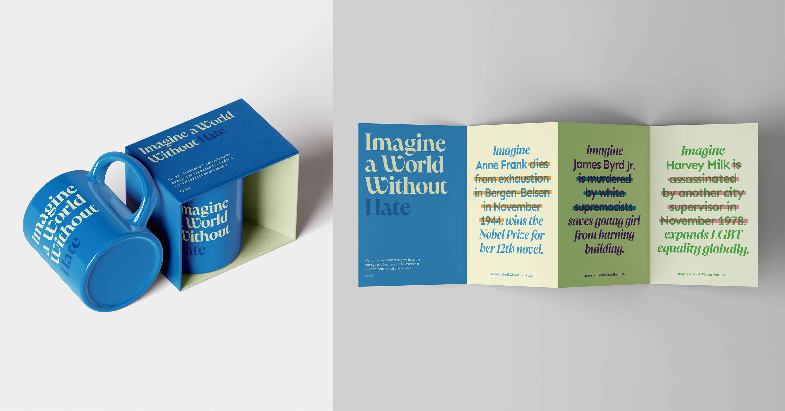
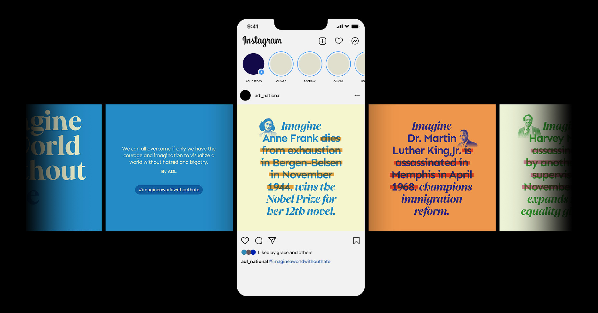
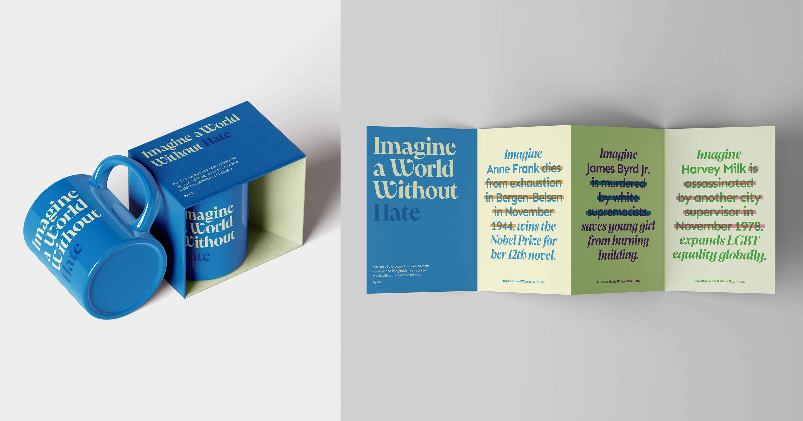
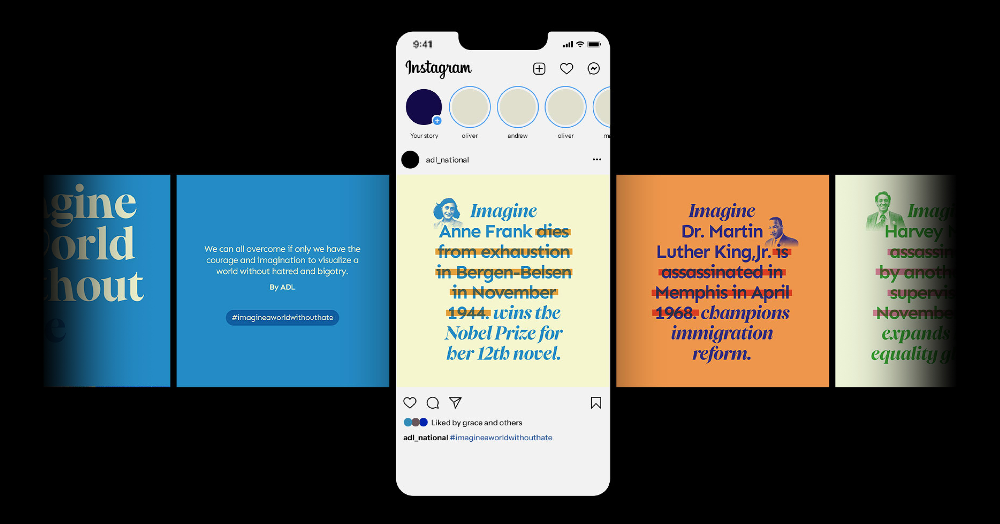

Social Campaign
Imagine a World Without Hate

May 2024
Digital, Motion graphic
Digital, Motion graphic
I reimagined the Anti-Defamation League’s campaign Imagine a World Without Hate, which poses a powerful question:
What if the individuals who lost their lives to hate had the chance to live out their dreams?
The original campaign existed solely as a YouTube video, using imagined narratives to honor the lives that could have been.
I was drawn to this storytelling approach and wanted to translate it into a visual language that could live beyond the screen—in public spaces, on billboards, and across social media.
Through typography, I created a series of motion and print posters that juxtapose the real and imagined stories of these individuals. I used strikethroughs to mark the original, tragic endings—a visual reminder of the lives cut short—while the imagined text offers a hopeful alternative. The title is set in Pangaia, a serif typeface by Pangram Pangram, chosen for the warmth and embrace suggested by the shape of the letter “W.”
The overall design is minimal and type-driven, allowing the message to speak clearly and accessibly. My goal was to make the campaign feel present and tangible—a call to reflect, and to imagine a world where hate doesn’t win.
Through typography, I created a series of motion and print posters that juxtapose the real and imagined stories of these individuals. I used strikethroughs to mark the original, tragic endings—a visual reminder of the lives cut short—while the imagined text offers a hopeful alternative. The title is set in Pangaia, a serif typeface by Pangram Pangram, chosen for the warmth and embrace suggested by the shape of the letter “W.”
The overall design is minimal and type-driven, allowing the message to speak clearly and accessibly. My goal was to make the campaign feel present and tangible—a call to reflect, and to imagine a world where hate doesn’t win.
 


